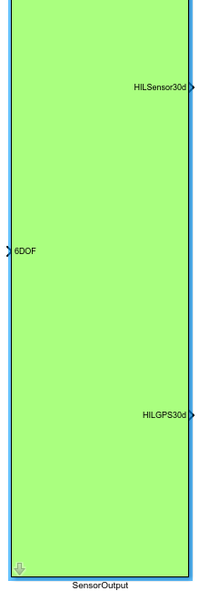
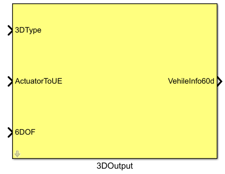
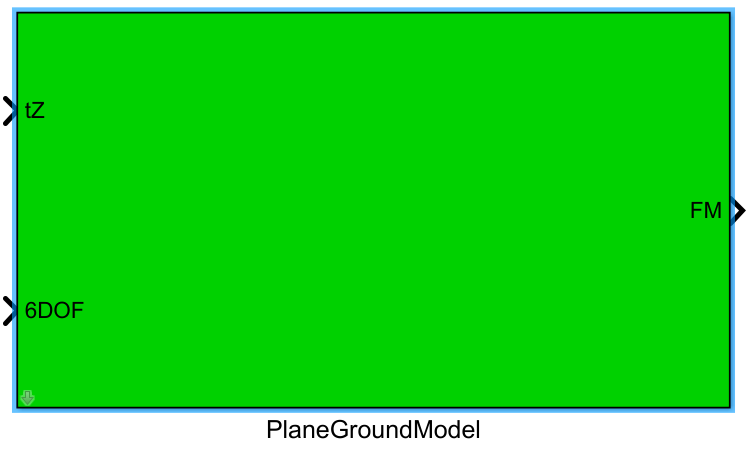
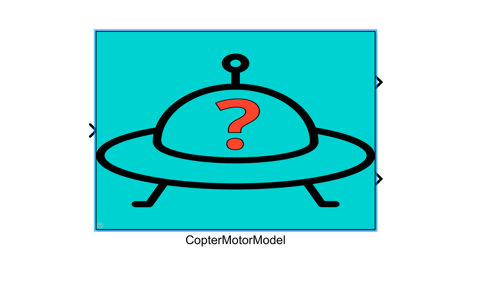
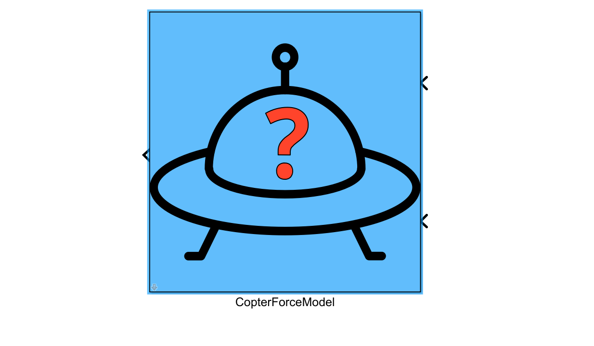
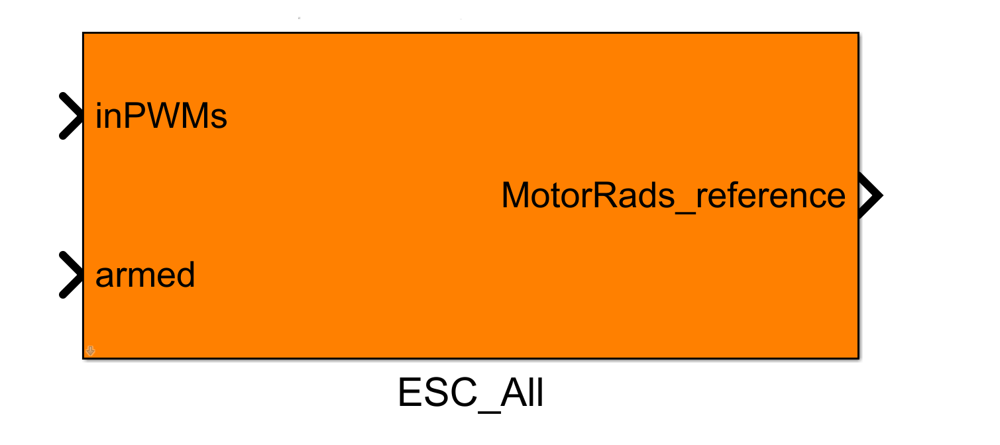
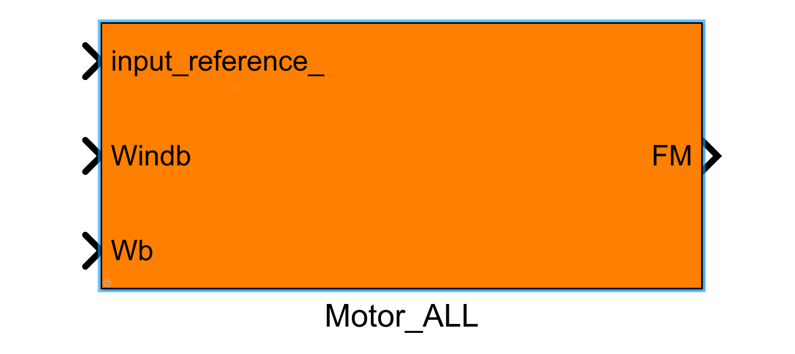
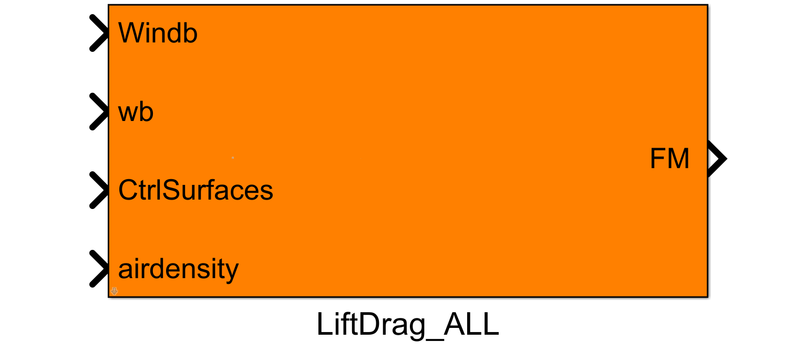

1.载具模型统一建模框架
1.1.模型输入接口
1.1.1 飞控仿真输入接口
1.1.1.1 inPWMs（电机控制量输入）
16维执行器控制量输入，已归一化到-1到1尺度，它的数据来自飞控回传的电机控制MAVLink消息mavlink_hil_actuator_controls_t的controls，软硬件在环仿真过程中可以通过QGroundControl中Analyze Tools里的MAVLink检测功能实时查看controls变化。
从图 0.1得知，软件在环仿真时，电机控制指令从PX4 SITL控制器通过TCP 4561系列端口以MAVLink协议发送到运动仿真模型的inPWMs接口，而硬件在环仿真时，该指令是从飞控通过串口以MAVLink协议发送到运动仿真模型的inPWMs接口。
1.1.1.2 inCopterData（飞控状态量输入）
inCopterData是32维double型数据，前8维存储PX4的状态，目前1-6维数据，依次为：
- l inCopterData(1)：PX4的解锁标志位
- l inCopterData(2)：接收到的RC频道总数。当没有可用的RC通道时，该值应为0。
- l inCopterData(3)：仿真模式标志位，0：HITL，1：SITL，2：SimNoPX4。
- l inCopterData(4)：CoperSim中的3D fixed标志位。
- l inCopterData(5)：来自PX4的VTOL_STATE标志位。
- l inCopterData(6)：来自PX4的LANDED_STATE标志位。
- 9-24维接收ch1-ch16 RC通道信号（遥控器输入），25-32维监听rfly_px4 uORB消息。
1.1.2 碰撞数据接收接口
1.1.2.1inFloatsCollision
利用inFloatsCollision实现了一个简单地物理引擎，可以根据RflySim3D回传的四周距离数据，实现碰到障碍物的回弹、碰到其他飞机便坠毁等功能（补充readme）。
1.1.2.2inCollision20d（外部碰撞数据输入）
20维double型输入，和inFloatsCollision接口功能一致，可以通过UDP网络从UE4传输，该端口为碰撞模型预留。
1.1.3 外部数据传入接口
1.1.3.1 inSILInts（整型数据输入）
8维Int32型输入，通过UDP协议获取，来自30100++2系列端口号，软硬件在环仿真时，可通过该端口向模型输入一些量；同时，该接口是实现综合模型的关键接口。
1.1.3.2 inSILFloats（浮点型数据输入）
20维float型输入，通过UDP协议获取，来自30100++2系列端口号，软硬件在环仿真时，可通过该端口向模型输入一些量；同时，该接口是实现综合模型的关键接口。
inSILInts和inSILFloats接口在CopterSim中数据结构体定义为：
struct PX4SILIntFloat{
int checksum;//1234567897
int CopterID;//飞机的ID
int inSILInts[8];//int标志位
float inSILFLoats[20];//float参数位
};
1.1.3.3 inFromUE（RflySim3D数据输入）
32维double型数据，来自三维引擎（Rflysim3D/RflySimUE5），可用于实现地面交互、碰撞引擎等需要与三维引擎进行数据交互的相关功能。
其数据结构体定义为：
struct UEToCopterDataD{
int checksum; //1234567899为校验ID
int CopterID; //发出本消息的飞机ID
double inFromUE[32]; //通过蓝图发出的数据
};
1.1.3.4 TerrainIn15d（地形交互输入）
第1维是地形高度信号，由于这里的地球固联坐标系（地面坐标系）为NED，垂直地面向下为正值。可以决定模型的初始位置高度。
- 1:地形高度(m)
- 2: haslop(0或1)
- 3:螺距(rad)
- 4:偏航(rad)
- 5: hasFric(0或1)
- 6: FrictionFactor
- 7: isMoveObj(0或1)
- 8: objVx (m/s)
- 9: objVy (m/s)
- 10: objYaw (rad)
- 11-15:预留
1.1.3.5 inCtrlExt（浮点型数据输入）
包括inCtrlExt1-inCtrlExt5系列接口，要求数据维度为28维，数据类型为float。通过UDP协议获取，来自30100++2系列端口号，软硬件在环仿真时，可通过该端口向模型输入一些量。目前主要用于故障注入。
1.1.3.6 inDoubCtrls(双精度浮点型数据输入)
28维double型数据输入，接收来自UDP 30100++2系列端口的数据，主要用于大场景下的综合模型仿真，其数据结构体定义为：
struct DllInDoubCtrls{
int checksum;//校验码1234567897
int CopterID; // 飞机的ID
double inDoubCtrls[28];//28维的double型输入
};
1.1.3.7 inSIL28d（双精度浮点数据输入）
28维double型输入，和inSILIntFloats接口功能一致。
1.2.模型输出接口
1.2.1 飞控仿真输出接口
1.2.1.1 HILSensor30d（传感器接口集合）
该输出信号是模型发送给飞控的各种传感器数据的集合，对应了MAVLink的mavlink_hil_sensor_t消息。输出信号中包括了加速度传感器的加速度值、陀螺仪传感器的角速度值、磁罗盘传感器的磁场值，气压和空速传感器的气压值等。
struct MavHILSensor {
uint64_t time_usec; /*< 时间戳 (微秒，同步到UNIX时间或自系统启动后)*/
float xacc; /*< X轴加速度 (米/秒^2)*/
float yacc; /*< Y轴加速度 (米/秒^2)*/
float zacc; /*< Z轴加速度 (米/秒^2)*/
float xgyro; /*< X轴角速度 (弧度/秒)*/
float ygyro; /*< Y轴角速度 (弧度/秒)*/
float zgyro; /*< Z轴角速度 (弧度/秒)*/
float xmag; /*< X轴磁场强度 (高斯)*/
float ymag; /*< Y轴磁场强度 (高斯)*/
float zmag; /*< Z轴磁场强度 (高斯)*/
float abs_pressure; /*< 绝对气压 (毫巴)*/
float diff_pressure; /*< 差分气压 (风速) (毫巴)*/
float pressure_alt; /*< 基于气压计算的高度*/
float temperature; /*< 温度 (摄氏度)*/
uint32_t fields_updated; /*< 更新字段的位掩码，位0 = xacc，位12: 温度，位31: 在仿真中执行了姿态/位置/速度等的完全重置。*/
};
// Bit 1-15: 由上述MAVLink结构定义
// Bit 16-30: 保留未来使用
1.2.1.2 HILGPS30d（GPS接口）
该输出信号是模型发送给飞控的GPS数据值，它对应了MAVLink消息的mavlink_hil_gps_t结构体。输出信号中包含了经纬高、水平竖直精度、地速、北东地的速度、偏航角、定位状态和卫星数量等数据。
需要注意的是，这些传感器的值在仿真时由平台模型提供，在真机飞行时由真实传感器芯片提供。从图 1得知，软件在环仿真时，传感器和GPS数据分别是从运动仿真模型的MavHILSensor、MavHILGPS接口发出、以MAVLink协议的形式通过TCP 4561系列端口发送到PX4 SITL控制器的，而硬件在环仿真时，这些数据是通过串口发送到飞控的。
struct MavHILGPS {
uint64_t time_usec; /*< 时间戳 (微秒，自UNIX纪元以来或自系统启动以来)*/
int32_t lat; /*< 纬度 (WGS84)，单位为十百万分之一度*/
int32_t lon; /*< 经度 (WGS84)，单位为十百万分之一度*/
int32_t alt; /*< 高度 (AMSL，非WGS84)，单位为千分之一米 (向上为正)*/
uint16_t eph; /*< GPS水平位置精度衰减 (HDOP)，单位为厘米 (米*100)。如果未知，设置为65535*/
uint16_t epv; /*< GPS垂直位置精度衰减 (VDOP)，单位为厘米 (米*100)。如果未知，设置为65535*/
uint16_t vel; /*< GPS地面速度，单位为厘米/秒。如果未知，设置为65535*/
int16_t vn; /*< GPS速度，单位为厘米/秒，北向，在地球固定的NED坐标系中*/
int16_t ve; /*< GPS速度，单位为厘米/秒，东向，在地球固定的NED坐标系中*/
int16_t vd; /*< GPS速度，单位为厘米/秒，向下，在地球固定的NED坐标系中*/
uint16_t cog; /*< 地面航向 (非航首航向，而是移动方向)，单位为百分之一度，范围0.0至359.99度。如果未知，设置为65535*/
uint8_t fix_type; /*< 定位类型，0-1: 无定位，2: 二维定位，3: 三维定位。除非此字段至少为2，否则某些应用程序不会使用此字段的值。*/
uint8_t satellites_visible; /*< 可见卫星数量。如果未知，设置为255*/
};
// Bit 1-13: 由上述MAVLink结构定义
// Bit 14-30: 保留未来使用
1.2.1.1 ExtToPX4（自定义uORB数据输出）
16维float型数据，以串口的方式发送给PX4的uORB消息rfly_ext，用于传输其他传感器或必要数据给飞控（补充readme）。
1.2.2 仿真数据输出接口
1.2.2.1 VehileInfo60d（真实仿真数据输出）
该输出信号是模型发送给RflySim3D的真实仿真数据，是平滑的理想值，这些数据可用于Simulink下的飞控与模型进行软件仿真测试。由于模型真值在真机实验时是不可获取的，只能用PX4自驾仪的状态估计值（存在延迟、噪声和干扰），这就导致Simulink控制器往PX4在环仿真和真机实验时效果变差，需要进行调整。
struct MavVehileStateInfo {
int copterID; // 无人机ID
int vehicleType; // 无人机类型
double runnedTime; // 当前时间戳，单位为秒
float VelE[3]; // NED坐标系中无人机在地球坐标系下的速度（米/秒），分别为北向、东向和下向速度
float PosE[3]; // NED坐标系中无人机在地球坐标系下的位置（米），分别为北向、东向和下向位置
float AngEuler[3]; // 无人机的欧拉角（弧度），分别为滚转、俯仰和偏航角
float AngQuatern[4]; // 无人机的姿态四元数，提供了另一种表示姿态的方式
float MotorRPMS[8]; // 各电机的转速（RPM）
float AccB[3]; // 无人机在机体坐标系中的加速度（米/秒²），分别为X、Y、Z方向
float RateB[3]; // 无人机在机体坐标系中的角速度（弧度/秒），分别为X、Y、Z方向
double PosGPS[3]; // 无人机的GPS位置，包括经度、纬度（度）和高度（米）
};
// Bit 1-33: 由上述MAVLink结构定义
// Bit 34-60: 保留未来使用
1.2.2.2 outCopterData（自定义日志输出）
32维double型，里面的内容可自定义发送数据。发往本接口的数据，一方面会写入到本地的log日志中（在C:\PX4PSP\CopterSim下新建CopterSim*.csv，才会开始记录*号飞机的数据，注意这里*要换成飞机的ID）。另一方方面，本数据会通过UDP传输到30101系列端口（补充readme）。
1.2.2.3 ExtToUE4（自定义显示数据输出）
16维double型数据，通过20100系列端口发送给RflySim3D作为第9-24维执行器控制消息显示（补充readme）。
1.3 实时参数修改接口—FaultParamsAPI
1.3.1 FaultParamAPI.FaultInParams（故障注入参数修改接口）
1.3.2 FaultParamAPI.InitInParams（参数初始化接口）
1.3.3 FaultParamAPI.DynModiParams（参数动态修改接口）
| 实现例程 | "C:\PX4PSP\RflySimAPIs\4.RflySimModel\3.CustExps\e0_AdvApiExps\5.ParamAPI\3.DynModiParams\Readme.pdf" | | -----— | ---------------------------------------------------------— |
2.通用Simulink建模模块
2.1.6DOF模块
| 功能 | 该模块中包括了简易的环境模型和基于四元数的刚体六自由度模型。简易环境模型模拟了重力对无人系统飞行产生的影响；刚体六自由度模型用于描述无人载具运动时的姿态和位置变化 |
| 详细介绍 | 6DOF模块 |
2.2.传感器输出模块（SensorOutput）

image-20240709164201355
2.3.三维显示输出模块（3DOutput）

image-20240709164221296
2.4.地面模型

image-20240709164845884
2.5.碰撞模型
2.6.多旋翼电机响应模块

image-20240710094456092
2.7.多旋翼力和力矩计算

image-20240710095710808
3.通用Gazebo移植模块
3.1.电调模块单元
ESC_ALL（外层）

| 功能 | 该模块将inPWMs的8维控制信号经过映射、单位处理，得到相应的期望控制信号ControlRef，其中包含Velocity速度控制（电机）与Position位置控制（舵面）两种类型的信号。根据inCopterData的外部使能标志位输入确定激活其内部的哪些模块 |
| 详细介绍 | ESC_ALL |
ESC（内层）
3.2.受控动力模块单元
MOTOR_ALL（外层）

image-20240710150733701
MOTOR（内层）
3.3.飞机升阻力模块单元
LIFTDRAG_ALL（外层）

image-20240710150757477
LIFTDRAG（内层）
4.不同载具模型的自定义模块
4.1.建模框架下不同载具模型的区别
控制信号处理
力和力矩计算
环境模型
4.2.基于Simulink标准模块的模型
固定翼
无人车
高精度垂直起降飞机
4.3.基于Gazebo移植模块的模型
垂直起降飞机
水下无人艇
4.4.其它
直升机
基于动力系统辨识的四旋翼模型
高精度拖车模型
综合模型
{kind=link}
{kind=link}
{kind=link}
{kind=link}
{kind=link}
{kind=link}
{kind=link}
{kind=link}
{kind=link}
{kind=link}
{kind=link}
{kind=link}